Major Component Selection
Pressure Sensor
Table 1: Pressure Sensor Selection
| Solution | Pros | Cons |
|---|---|---|
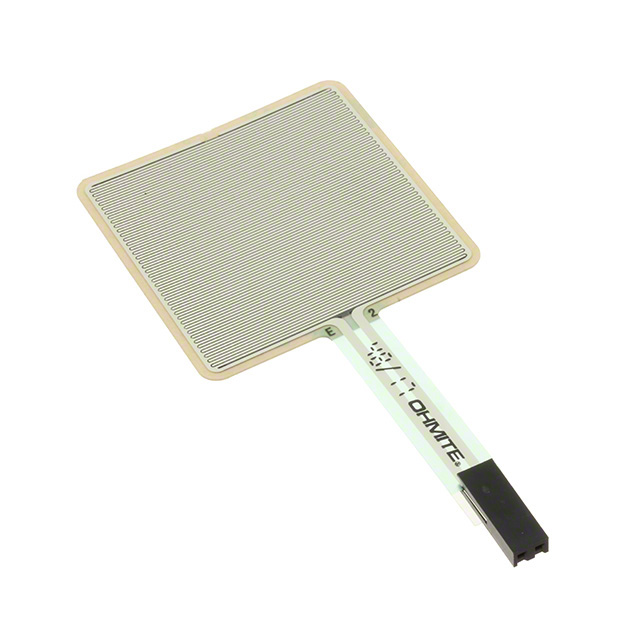 Option 1 FSR01CE Ohmite Force Sensing Resistor DigiKey Product Page |
* Large sensing area is well suited for the pressure pad. Thin construction makes it easy to install under the pressure surface. Resistance output can be converted to voltage using a simple voltage divider. Requires relatively little supporting circuitry. Simple analog output is easy to interface with the signal-conditioning circuit. |
* Resistance-to-force relationship is nonlinear. Less accurate than precision force sensors such as load cells. Output can vary depending on how force is distributed across the sensing area. * Calibration is required for accurate force measurements. |
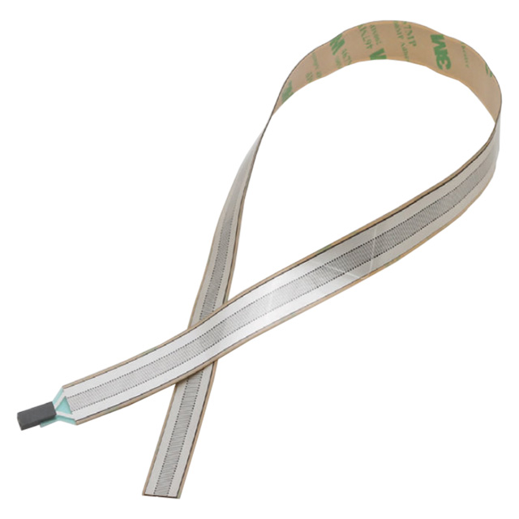 Option 2 FSR02CE Ohmite Force Sensing Resistor DigiKey Product Page |
* Compact size requires little installation space. Thin construction simplifies mechanical integration. Resistance output allows simple analog signal conditioning. * Requires few supporting electrical components. |
* Smaller sensing area is less suitable for the pressure pad. Force must be concentrated over a smaller area. Resistance-to-force relationship is nonlinear. * Requires calibration for accurate force measurements. |
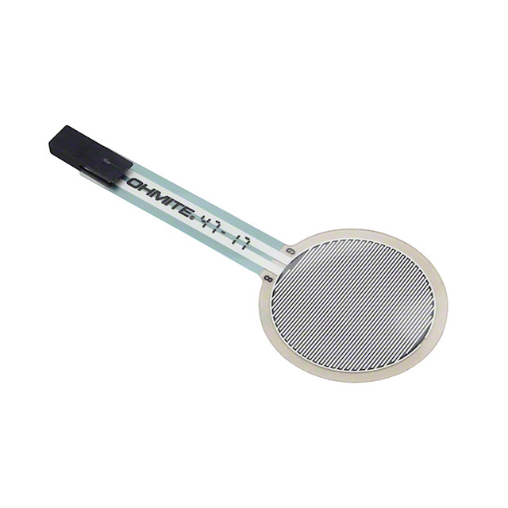 Option 3 FSR03CE Ohmite Force Sensing Resistor DigiKey Product Page |
* Larger sensing area than the FSR02CE. Thin construction allows installation underneath the pressure surface. Resistance output is easy to interface with analog circuitry. * Requires relatively few supporting components. |
* Sensing area is smaller than the FSR01CE. Nonlinear response makes precise force measurements difficult. Requires calibration for quantitative measurements. * Output can vary with force distribution. |


Choice: Option 1: FSR01CE
Rationale: The FSR01CE was selected because its larger sensing area is better suited for the pressure-pad subsystem. Its resistance-based output can be converted into a voltage using a simple voltage divider and conditioned before being measured by the microcontroller. The subsystem primarily needs to detect changes in applied pressure rather than make precision force measurements, making the FSR01CE a suitable combination of sensing area, simple interfacing, and mechanical integration.
Operational Amplifier
Table 2: Operational Amplifier Selection
| Solution | Pros | Cons |
|---|---|---|
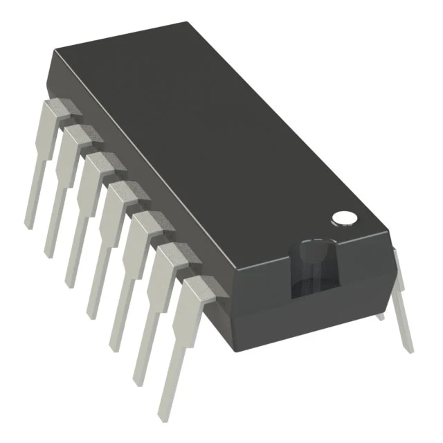 Option 1 MCP6004-I/P Microchip Technology Quad Operational Amplifier 14-PDIP Through-Hole DigiKey Product Page |
* Operates from 1.8 V to 6 V and is compatible with the 5 V rail. Rail-to-rail output provides a large usable output-voltage range. Four operational amplifiers are included in one IC. Low supply current reduces system power consumption. Through-hole PDIP package is easy to solder. * Extra amplifier channels allow future expansion. |
* 1 MHz gain-bandwidth product is lower than higher-performance alternatives. Four amplifier channels may be more than currently required. 14-pin package occupies more PCB space than an 8-pin dual amplifier. * Cannot operate directly from supply voltages greater than 6 V. |
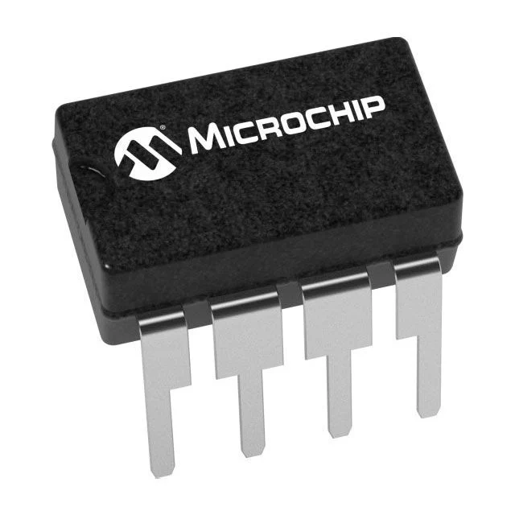 Option 2 MCP6002-I/P Microchip Technology Dual Operational Amplifier 8-PDIP Through-Hole DigiKey Product Page |
* Operates from 1.8 V to 6 V and is compatible with the 5 V rail. Rail-to-rail output is suitable for interfacing with the microcontroller ADC. Smaller 8-pin package requires less PCB space. Low supply current reduces system power consumption. Through-hole package simplifies soldering and assembly. |
* Contains only two amplifier channels compared with four in the MCP6004. Future expansion could require an additional IC. 1 MHz bandwidth is lower than higher-performance alternatives. * Provides fewer amplifier channels while offering similar electrical performance to the MCP6004. |
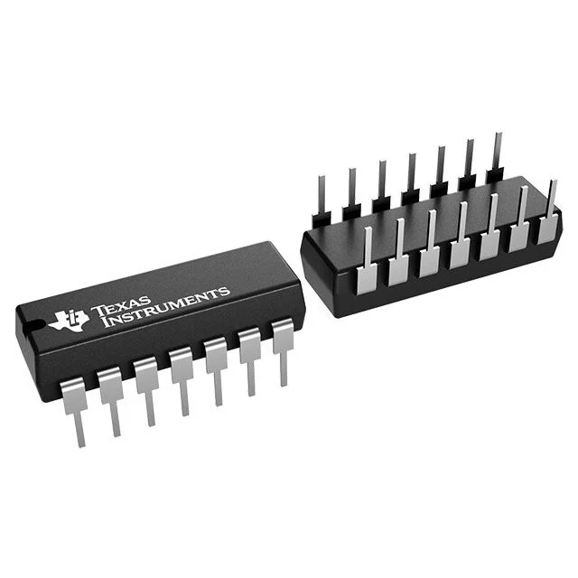 Option 3 TLV2464IN Texas Instruments Quad Operational Amplifier 14-PDIP Through-Hole DigiKey Product Page |
* Contains four operational amplifiers in one package. Compatible with the 5 V power rail. Rail-to-rail output provides a large usable output range. 6.4 MHz bandwidth provides greater performance than the MCP6004. Through-hole package simplifies manual PCB assembly. |
* More expensive than the MCP6004 and MCP6002. Higher supply current increases system power consumption. Additional bandwidth is unnecessary for the slowly changing pressure-pad signal. * 14-pin package provides no PCB-space advantage over the MCP6004. |


Choice: Option 1: MCP6004-I/P
Rationale: The MCP6004-I/P was selected because it provides four operational amplifiers, rail-to-rail output, low power consumption, and direct compatibility with the 5 V power rail. The MCP6002-I/P requires less PCB space but only provides two amplifier channels. The TLV2464IN provides greater bandwidth, but this additional performance is unnecessary for the relatively slow pressure-pad signal. The MCP6004-I/P therefore provides the required performance while also providing additional amplifier channels for future signal-conditioning requirements.
5 V Voltage Regulator
Table 3: Voltage Regulator Selection
| Solution | Pros | Cons |
|---|---|---|
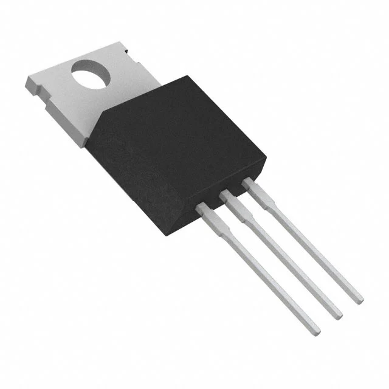 Option 1 MC7805CTG onsemi 5 V Linear Voltage Regulator TO-220 Through-Hole DigiKey Product Page |
* Provides the regulated 5 V output required by the subsystem. Through-hole TO-220 package simplifies manual soldering. High output-current capability provides substantial current margin. Common regulator architecture simplifies circuit implementation. Internal protection features improve reliability. |
* Excess input voltage is dissipated as heat. Requires an input voltage sufficiently above 5 V to maintain regulation. Efficiency decreases as the difference between input and output voltage increases. * Thermal management may be required at high load currents. |
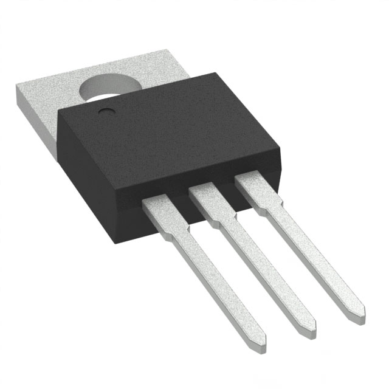 Option 2 UA7805CKCS Texas Instruments 5 V Linear Voltage Regulator TO-220 Through-Hole DigiKey Product Page |
* Fixed 5 V output directly matches the required power rail. High output-current capability provides significant design margin. Internal thermal protection improves reliability. Internal current limiting provides protection during fault conditions. Through-hole TO-220 package simplifies assembly. |
* Linear regulation dissipates excess input voltage as heat. Input voltage must remain sufficiently above 5 V. Current capability is much greater than required by this subsystem. * Less efficient than a switching regulator when operating from a higher input voltage. |
 Option 3 LM2931T-5.0/NOPB Texas Instruments 5 V Low-Dropout Linear Regulator TO-220 Through-Hole DigiKey Product Page |
* Fixed 5 V output matches the required system voltage. Low-dropout design can operate with a lower input voltage than conventional 7805 regulators. Through-hole TO-220 package simplifies manual soldering. * Lower dropout can reduce wasted voltage when the input supply is close to 5 V. |
* Lower maximum output current than the 7805 alternatives. Provides less current margin for future expansion. Still dissipates excess input voltage as heat. * Output-current capability must be verified using the final power budget. |


Choice: Option 1: MC7805CTG
Rationale: The MC7805CTG was selected because it provides the required regulated 5 V output and sufficient current capacity for the pressure-pad subsystem while maintaining additional current margin. Its through-hole TO-220 package is appropriate for manual PCB assembly. The LM2931 provides lower dropout but has less output-current capability, while the UA7805CKCS provides more current capability than the subsystem requires. The MC7805CTG therefore provides a simple and robust solution when paired with an appropriate external DC supply.
DC Barrel Jack
Table 4: DC Barrel Jack Selection
| Solution | Pros | Cons |
|---|---|---|
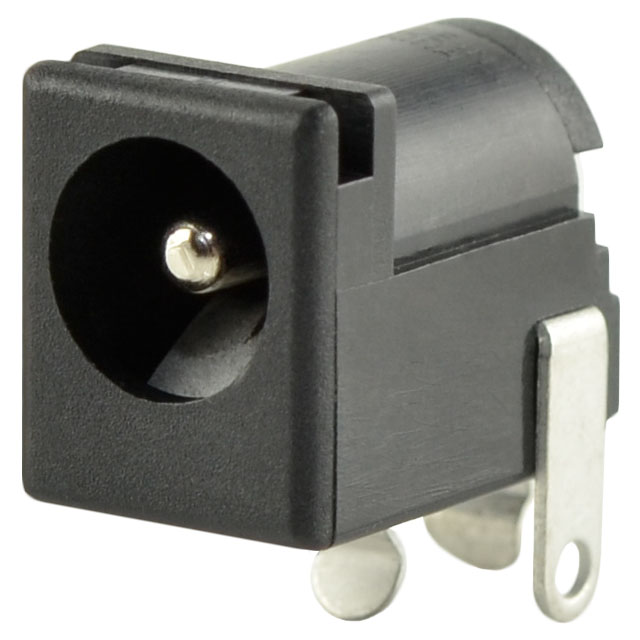 Option 1 PJ-202A Same Sky 5.5 mm OD / 2.1 mm ID Through-Hole DC Barrel Jack DigiKey Product Page |
* Through-hole mounting provides a strong mechanical PCB connection. 5.5 mm by 2.1 mm size is suitable for commonly available DC adapters. Right-angle orientation allows convenient access from the PCB edge. Electrical ratings provide substantial margin for the subsystem. Integrated switching contact provides additional power-routing flexibility. |
* Occupies more PCB area than smaller power connectors. Connecting and disconnecting the adapter applies mechanical force to the PCB. External supply must use a compatible 5.5 mm by 2.1 mm plug. * Does not inherently protect against incorrect supply voltage or polarity. |
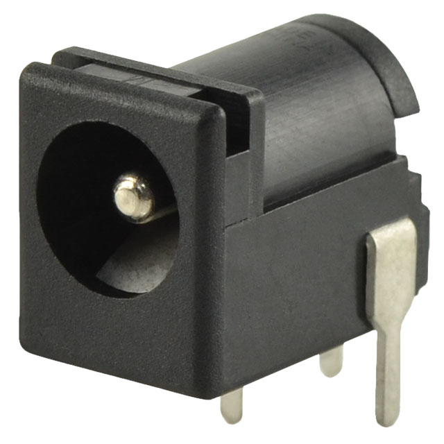 Option 2 PJ-102A Same Sky 5.5 mm OD / 2.0 mm ID Through-Hole DC Barrel Jack DigiKey Product Page |
* Through-hole mounting provides good mechanical strength. Right-angle orientation is convenient for PCB-edge mounting. Electrical ratings exceed the expected subsystem requirements. * Integrated switching contact provides additional power-routing options. |
* 2.0 mm center pin is less compatible with common 2.1 mm plugs. Requires a specifically matched external power adapter. Occupies valuable PCB-edge space. * Does not protect the circuit from an incorrect supply voltage or polarity. |
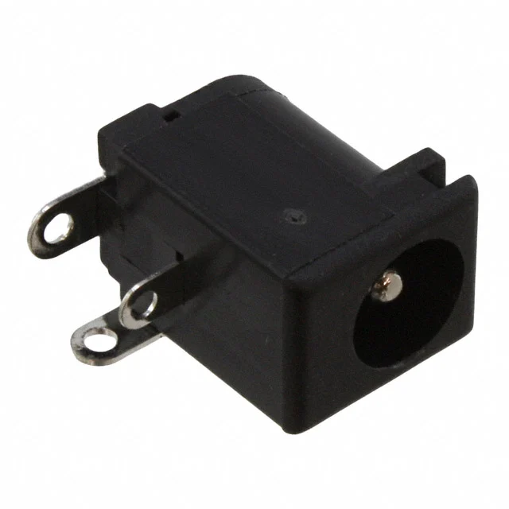 Option 3 PJ-002A Same Sky 5.5 mm OD / 2.0 mm ID Through-Hole DC Barrel Jack DigiKey Product Page |
* Through-hole construction provides good mechanical strength. Electrical ratings provide substantial margin over the expected subsystem load. Right-angle configuration allows convenient PCB-edge access. * Simple construction makes schematic integration straightforward. |
* 2.0 mm center pin requires a matching external plug. Less compatible with common 2.1 mm adapters than the PJ-202A. Physical connector occupies significant PCB-edge space. * Does not provide protection against incorrect external supply voltage or polarity. |


Choice: Option 1: PJ-202A
Rationale: The PJ-202A was selected because its through-hole construction provides a strong mechanical connection to the PCB and its right-angle orientation allows convenient access from the edge of the board. Its 5.5 mm outer diameter and 2.1 mm center-pin configuration provides a practical connection for an external DC power adapter. Its electrical ratings also provide substantial margin over the requirements of the pressure-pad subsystem. Compared with the other two options, the PJ-202A provides the preferred 2.1 mm center-pin connection for the planned external power supply.